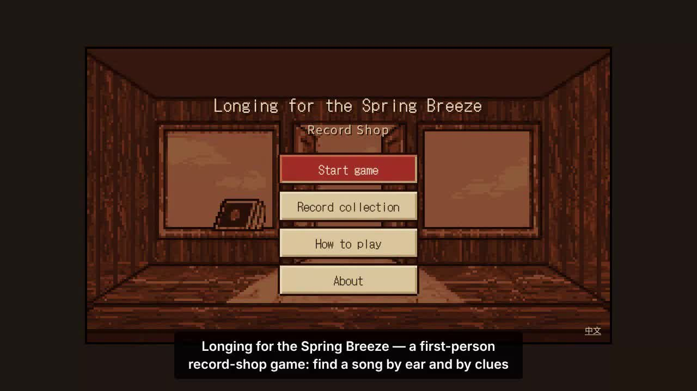
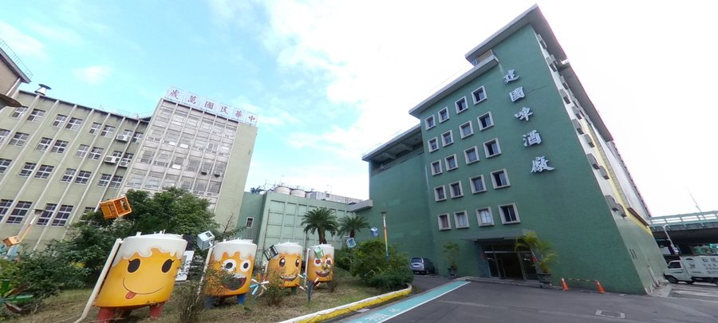

Longing for the Spring Breeze 望春風
A first-person record-shop game set in Taiwan under martial law. Players use their ears and clues to find the record a customer remembers, while new rules arrive each day.
I am a student of adult and continuing education, where I became interested in cultural education and media production. I make interactive experiences about culture and history, and I try to help people learn more through them.
A first-person record-shop game set in Taiwan under martial law. Players use their ears and clues to find the record a customer remembers, while new rules arrive each day.

A virtual tour of Taiwan's first brewery, a century-old site with several designated monuments. The full version holds more than 150 panoramas.
